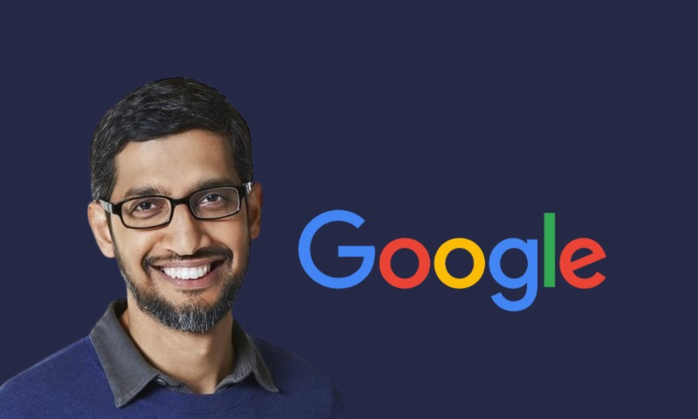

Sundar Pichai(CEO of Google)

Pichai Sundararajan (born June 10, 1972), better known as Sundar Pichai, is an Indian-American business executive. He is the chief executive officer (CEO) of Alphabet Inc. and its subsidiary Google.
Pichai began his career as a materials engineer.As well as being largely responsible for Google Drive. In addition, he went on to oversee the development of other applications such as Gmail and Google Maps. In 2010, Pichai also announced the open-sourcing of the new video codec VP8 by Google and introduced the new video format, WebM. The Chromebook was released in 2012. In 2013, Pichai added Android to the list of Google products that he oversaw.
Early life and education

Pichai was born in Madurai, Tamil Nadu, India. His mother, Lakshmi, was a stenographer, and his father, Regunatha Pichai, was an electrical engineer at GEC, the British conglomerate. His father also had a manufacturing plant that produced electrical components. Pichai completed schooling in Jawahar Vidyalaya Senior Secondary School in Ashok Nagar, Chennai and completed the Class XII from Vana Vani school at IIT Madras. He earned his degree from IIT Kharagpur in metallurgical engineering and is a distinguished alumnus from that institution.He holds an M.S. from Stanford University in materials science and engineering, and an MBA from the Wharton School of the University of Pennsylvania,where he was named a Siebel Scholar and a Palmer Scholar, respectively.
Pichai completed schooling in Jawahar Vidyalaya Senior Secondary School in Ashok Nagar, Chennai and completed the Class XII from Vana Vani school at IIT Madras. He earned his degree from IIT Kharagpur in metallurgical engineering and is a distinguished alumnus from that institution.[19] He holds an M.S. from Stanford University in materials science and engineering, and an MBA from the Wharton School of the University of Pennsylvania,[20] where he was named a Siebel Scholar and a Palmer Scholar, respectively.He earned his degree from IIT Kharagpur in metallurgical engineering and is a distinguished alumnus from that institution.[19] He holds an M.S. from Stanford University in materials science and engineering, and an MBA from the Wharton School of the University of Pennsylvania,[20] where he was named a Siebel Scholar and a Palmer Scholar, respectively.
Career & Married Life
 Pichai worked in engineering and product management at Applied Materials and in management consulting at McKinsey & Company.[23] Pichai joined Google in 2004, where he led the product management and innovation efforts for a suite of Google's client software products, including Google Chrome[24] and ChromeOS, as well as being largely responsible for Google Drive. He went on to oversee the development of other applications such as Gmail and Google Maps.On November 19, 2009, Pichai gave a demonstration of ChromeOS; the Chromebook was released for trial and testing in 2011, and released to the public in 2012.[27] On May 20, 2010, he announced the open-sourcing of the new video codec VP8 by Google and introduced the new video format, WebM.
On March 13, 2013, Pichai added Android to the list of Google products that he oversaw. Android was formerly managed by Andy Rubin.[29] He was a director of Jive Software from April 2011 to July 30, 2013.Pichai was selected to become the next CEO of Google on August 10, 2015[33] after previously being appointed Product Chief by CEO, Larry Page. On October 24, 2015, he stepped into the new position at the completion of the formation of Alphabet Inc., the new holding company for the Google company family. Pichai had been suggested as a contender for Microsoft's CEO in 2014, a position that was eventually given to Satya Nadella.[36][37] In August 2017, Pichai drew publicity for firing a Google employee who wrote a ten-page manifesto criticizing the company's diversity policies.
Pichai worked in engineering and product management at Applied Materials and in management consulting at McKinsey & Company.[23] Pichai joined Google in 2004, where he led the product management and innovation efforts for a suite of Google's client software products, including Google Chrome[24] and ChromeOS, as well as being largely responsible for Google Drive. He went on to oversee the development of other applications such as Gmail and Google Maps.On November 19, 2009, Pichai gave a demonstration of ChromeOS; the Chromebook was released for trial and testing in 2011, and released to the public in 2012.[27] On May 20, 2010, he announced the open-sourcing of the new video codec VP8 by Google and introduced the new video format, WebM.
On March 13, 2013, Pichai added Android to the list of Google products that he oversaw. Android was formerly managed by Andy Rubin.[29] He was a director of Jive Software from April 2011 to July 30, 2013.Pichai was selected to become the next CEO of Google on August 10, 2015[33] after previously being appointed Product Chief by CEO, Larry Page. On October 24, 2015, he stepped into the new position at the completion of the formation of Alphabet Inc., the new holding company for the Google company family. Pichai had been suggested as a contender for Microsoft's CEO in 2014, a position that was eventually given to Satya Nadella.[36][37] In August 2017, Pichai drew publicity for firing a Google employee who wrote a ten-page manifesto criticizing the company's diversity policies.
 Pichai product management at Applied Materials and in management consulting at McKinsey & Company.[23] Pichai joined Google in 2004, where he led the product management and innovation efforts for a suite of Google's client software products, including Google Chrome[24] and ChromeOS, as well as being largely responsible for Google Drive. He went on to oversee the development of other applications such as Gmail and Google Maps.On November 19, 2009, Pichai gave a demonstration of ChromeOS; the Chromebook was released for trial and testing in 2011, and released to the public in 2012.[27] On May 20, 2010, he announced the open-sourcing of the new video codec VP8 by Google and introduced the new video format, WebM.
On March 13, 2013, Pichai added Android to the list of Google products that he oversaw. Android was formerly managed by Andy Rubin.[29] He was a director of Jive Software from April 2011 to July 30, 2013.Pichai was selected to become the next CEO of Google on August 10, 2015[33] after previously being appointed Product Chief by CEO, Larry Page. On October 24, 2015, he stepped into the new position at the completion of the formation of Alphabet Inc., the new holding company for the Google company family. Pichai had been suggested as a contender for Microsoft's CEO in 2014, a position that was eventually given to Satya Nadella.[36][37] In August 2017, Pichai drew publicity for firing a Google employee who wrote a ten-page manifesto criticizing the company's diversity policies.
Pichai product management at Applied Materials and in management consulting at McKinsey & Company.[23] Pichai joined Google in 2004, where he led the product management and innovation efforts for a suite of Google's client software products, including Google Chrome[24] and ChromeOS, as well as being largely responsible for Google Drive. He went on to oversee the development of other applications such as Gmail and Google Maps.On November 19, 2009, Pichai gave a demonstration of ChromeOS; the Chromebook was released for trial and testing in 2011, and released to the public in 2012.[27] On May 20, 2010, he announced the open-sourcing of the new video codec VP8 by Google and introduced the new video format, WebM.
On March 13, 2013, Pichai added Android to the list of Google products that he oversaw. Android was formerly managed by Andy Rubin.[29] He was a director of Jive Software from April 2011 to July 30, 2013.Pichai was selected to become the next CEO of Google on August 10, 2015[33] after previously being appointed Product Chief by CEO, Larry Page. On October 24, 2015, he stepped into the new position at the completion of the formation of Alphabet Inc., the new holding company for the Google company family. Pichai had been suggested as a contender for Microsoft's CEO in 2014, a position that was eventually given to Satya Nadella.[36][37] In August 2017, Pichai drew publicity for firing a Google employee who wrote a ten-page manifesto criticizing the company's diversity policies.
AWARDS

Padma Bhushan😀